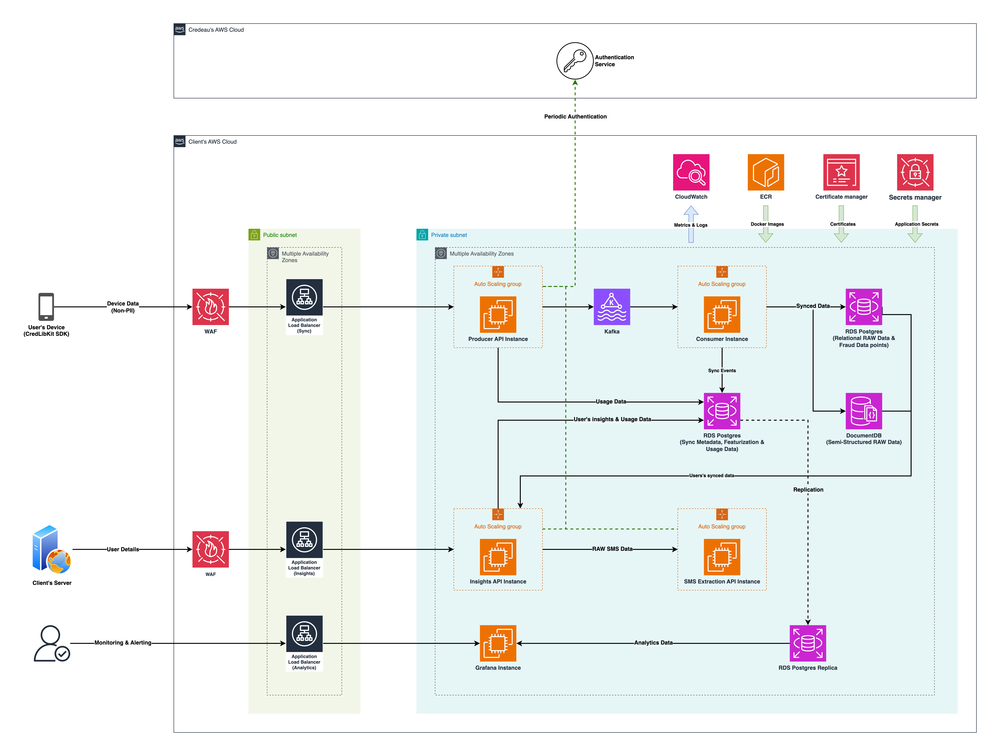

Deployment: Development Environment¶
Overview¶
This development environment is designed to emulate the production setup of MobileForge while maintaining a minimal resource footprint. By allocating modest CPU and memory resources to each component, we ensure cost-effective operations suitable for development and testing purposes. For environments expecting higher traffic volumes, please consult the Scaling Guide for appropriate adjustments.
Option 1: Using Docker on Individual Servers with AWS EC2 Auto Scaling¶
Architecture Overview¶
The diagram below illustrates a typical deployment of the MobileForge platform on AWS using services running as Docker containers on EC2 machines within AutoScaling Groups. It is intended as a reference architecture showcasing how various components work together in a functional setup.

Prerequisites¶
- Docker installed on all servers.
- AWS CLI configured with necessary permissions.
- CloudWatch Agent installed on EC2 instances to collect memory metrics.
- IAM Roles with permissions for EC2, Auto Scaling, and CloudWatch.
Deployment Steps¶
Create Launch Templates with User Data Scripts¶
Define launch templates for each component, specifying the AMI, instance type, security groups, iam role and user data scripts to start Docker containers with volume mounts for stateful components.
AMI -
Use ami-082a662d6297ab2a2 (ubuntu/images/hvm-ssd/ubuntu-jammy-22.04-amd64-server-20250425) or similar.
For faster deployments, prepare a custom AMI with OS of choice and pre-installed prerequisites like Docker engine, AWS CLI, CloudwatchAgent etc ...
Instance Type -
Use small instances like t3a.small / t3a.medium for minimal setup.
Security Group -
Ensure the servers have relevant access for limited users. Expose the following ports -
2181and9092for Kafka open for VPC CIDR or specific security groups (Producer & Consumer).27017for MongoDB open for VPC CIDR or specific security groups (Consumer & Insights).5432for PostgreSQL open for VPC CIDR or specific security groups (Producer, Consumer & Insights).8000for Producer & Insights open for load balancers in public networks.8082for SMS Extraction open for VPC CIDR and load balancer specific security groups.
Iam Role & Policy -
Role trust relationship
{
"Version": "2012-10-17",
"Statement": [
{
"Action": "sts:AssumeRole",
"Principal": {
"Service": "ec2.amazonaws.com"
},
"Effect": "Allow"
}
]
}
Policy to attach
{
"Version": "2012-10-17",
"Statement": [
{
"Sid": "ECRLogin",
"Effect": "Allow",
"Action": [
"ecr:GetAuthorizationToken"
],
"Resource": "*"
},
{
"Sid": "ECRPull",
"Effect": "Allow",
"Action": [
"ecr:BatchCheckLayerAvailability",
"ecr:GetDownloadUrlForLayer",
"ecr:BatchGetImage"
],
"Resource": "arn:aws:ecr:<region>:<account-id>:repository/<repo-name>"
}
]
}
User Data script for Producer/Consumer/Insights -
#!/bin/bash
# Add installations steps for Docker Engine & AWS CLI if not using custom AMI with these pre-requisites met
# GCA Setup
aws ecr get-login-password --region "<aws_region>" | docker login --username AWS --password-stdin "<aws_account_id>.dkr.ecr.<region>.amazonaws.com/<repository>:<version>"
docker pull "<aws_account_id>.dkr.ecr.<region>.amazonaws.com/<repository>:<version>"
docker run -d \
--name <application> \
--network=host \
-p <exposed_port>:<internal_port> \
...<environment_variables> \
--restart always \
"<aws_account_id>.dkr.ecr.<region>.amazonaws.com/<repository>:<version>"
Set Up Auto Scaling Groups (ASGs)¶
For each component -
- Create an ASG using the corresponding launch template.
- Define Scaling Policies:
- CPU Utilization: Target average CPU usage (e.g., 50%).
- Memory Utilization: Target average memory usage (e.g., 70%).
Option 2: Using Kubernetes with Horizontal Pod Autoscalers (HPAs)¶
Prerequisites¶
- Kubernetes Cluster with at least 7 nodes.
- Metrics Server deployed in the cluster.
- Persistent Volume Claims (PVCs) and Storage Classes set up for stateful components.
Deployment Steps¶
Deploy Components with Resource Requests and Limits¶
Define deployments for each component, specifying resource requests and limits to enable HPA functionality:
MongoDB -
apiVersion: apps/v1
kind: StatefulSet
metadata:
name: mongodb
spec:
serviceName: "mongodb"
replicas: 1
selector:
matchLabels:
app: mongodb
template:
metadata:
labels:
app: mongodb
spec:
containers:
- name: mongodb
image: mongo:7.0
ports:
- containerPort: 27017
env:
- name: MONGO_INITDB_ROOT_USERNAME
value: credeau
- name: MONGO_INITDB_ROOT_PASSWORD
value: 123456
volumeMounts:
- name: mongo-storage
mountPath: /data/db
volumeClaimTemplates:
- metadata:
name: mongo-storage
spec:
accessModes: ["ReadWriteOnce"]
resources:
requests:
storage: 10Gi
PostgreSQL -
apiVersion: apps/v1
kind: StatefulSet
metadata:
name: postgres
spec:
serviceName: "postgres"
replicas: 1
selector:
matchLabels:
app: postgres
template:
metadata:
labels:
app: postgres
spec:
containers:
- name: postgres
image: postgres:16
ports:
- containerPort: 5432
env:
- name: POSTGRES_USER
value: credeau
- name: POSTGRES_PASSWORD
value: 123456
- name: POSTGRES_DB
value: api_insights_db
volumeMounts:
- name: postgres-storage
mountPath: /var/lib/postgresql/data
volumeClaimTemplates:
- metadata:
name: postgres-storage
spec:
accessModes: ["ReadWriteOnce"]
resources:
requests:
storage: 10Gi
Zookeeper -
apiVersion: apps/v1
kind: StatefulSet
metadata:
name: zookeeper
spec:
serviceName: "zookeeper"
replicas: 1
selector:
matchLabels:
app: zookeeper
template:
metadata:
labels:
app: zookeeper
spec:
containers:
- name: zookeeper
image: confluentinc/cp-zookeeper:7.5.0
ports:
- containerPort: 2181
volumeMounts:
- name: zookeeper-storage
mountPath: /var/lib/zookeeper
volumeClaimTemplates:
- metadata:
name: zookeeper-storage
spec:
accessModes: ["ReadWriteOnce"]
resources:
requests:
storage: 10Gi
Kafka -
apiVersion: apps/v1
kind: StatefulSet
metadata:
name: kafka
spec:
serviceName: "kafka"
replicas: 1
selector:
matchLabels:
app: kafka
template:
metadata:
labels:
app: kafka
spec:
containers:
- name: kafka
image: confluentinc/cp-kafka:7.5.0
ports:
- containerPort: 9092
env:
- name: KAFKA_BROKER_ID
value: "1"
- name: KAFKA_ZOOKEEPER_CONNECT
value: zookeeper:2181
- name: KAFKA_LISTENERS
value: PLAINTEXT://:9092
- name: KAFKA_ADVERTISED_LISTENERS
value: PLAINTEXT://kafka:9092
volumeMounts:
- name: kafka-storage
mountPath: /var/lib/kafka
volumeClaimTemplates:
- metadata:
name: kafka-storage
spec:
accessModes: ["ReadWriteOnce"]
resources:
requests:
storage: 10Gi
Producer API -
apiVersion: v1
kind: Service
metadata:
name: producer-api
spec:
selector:
app: producer-api
ports:
- protocol: TCP
port: 80
targetPort: 8000
type: LoadBalancer
Consumer -
apiVersion: apps/v1
kind: Deployment
metadata:
name: consumer-api
labels:
app: consumer-api
spec:
replicas: 1
selector:
matchLabels:
app: consumer-api
template:
metadata:
labels:
app: consumer-api
spec:
containers:
- name: consumer-api
image: <aws_account_id>.dkr.ecr.<region>.amazonaws.com/consumer-api:<version>
ports:
- containerPort: 8001
env:
- name: DI_POSTGRES_USERNAME
value: credeau
- name: DI_POSTGRES_PASSWORD
value: 123456
- name: DI_POSTGRES_HOST
value: postgres
- name: DI_POSTGRES_PORT
value: "5432"
- name: DI_POSTGRES_DATABASE
value: api_insights_db
- name: DI_POSTGRES_SYNC_DATABASE
value: sync_db
Insights API -
apiVersion: v1
kind: Service
metadata:
name: insights-api
spec:
selector:
app: insights-api
ports:
- protocol: TCP
port: 80
targetPort: 8003
type: LoadBalancer
SMS Extraction API -
apiVersion: v1
kind: Service
metadata:
name: sms-extraction-api
annotations:
service.beta.kubernetes.io/aws-load-balancer-internal: "true"
spec:
selector:
app: sms-extraction-api
ports:
- protocol: TCP
port: 80
targetPort: 8002
type: LoadBalancer
Configure Horizontal Pod Autoscalers (HPAs)¶
apiVersion: autoscaling/v2
kind: HorizontalPodAutoscaler
metadata:
name: producer-api-hpa
spec:
scaleTargetRef:
apiVersion: apps/v1
kind: Deployment
name: producer-api
minReplicas: 2
maxReplicas: 10
metrics:
- type: Resource
resource:
name: cpu
target:
type: Utilization
averageUtilization: 50
- type: Resource
resource:
name: memory
target:
type: Utilization
averageUtilization: 70
Monitor and Adjust¶
Use kubectl get hpa to monitor scaling activities and adjust thresholds as needed.
Managing Host Addresses Across Deployments¶
Docker Deployments¶
- DNS Configuration: Use AWS Route 53 or another DNS service to assign domain names to each EC2 instance.
- Environment Variables: Pass host addresses as environment variables to Docker containers.
Kubernetes Deployments¶
- Services: Kubernetes Services provide stable DNS names for pods.
- Environment Variables: Use ConfigMaps or environment variables to pass service addresses to pods.